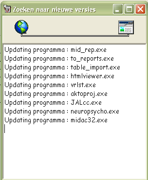

Auto Programma Update
Vanaf versie 16.7, kunnen de TestOrganizer en alle onderliggende programma's automatisch worden geupdate.
De beheerder van de TestOrganizer behoeft daartoe een nieuwe versie op een vaste plaats op het netwerk te zetten. De TestOrganizer zal iedere keer als hij opstart zoeken of er nieuwe versies zijn en als er nieuwe versies zijn, deze nieuwe versies lokaal installeren.
Zodra de TestOrganizer opstart, gaat de TestOrganizer testen of er nieuwe versies zijn, er verschijnt dan het onderstaande beeldscherm, waarin wordt aangegeven welk programma onderdeel wordt vernieuwd. Als er niets te vernieuwen valt, zal onderstaand venster maar heel kort in beeld zijn.

Als ook de TestOrganizer zelf vernieuwd moet worden, zal als laatste de TestOrganizer worden afgesloten, waarna een ouderwets DOS venster verschijnt, dat zorg draagt voor het vernieuwen van de TestOrganizer. Als ook deze update is uitgevoerd, zal de TestOrganizer weer in de oorspronkelijke staat (dus met de juiste ini-file en instelleingen) worden opgestart.
Er is een centrale plaats waar alle protollen in een vaste submap staan.
Omdat de TestOrganizer hiervoor nu nog geen expliciete instelling heeft, wordt uitgegaan van het basispad van de vragenlijst module (de protocollen dus). In deze structuur wordt een extra map ...\Protocol\Progs aangemaakt.
Door nieuwe versie van programma's hierin te zetten, zullen ze ter beschikking komen van alle gebruikers.